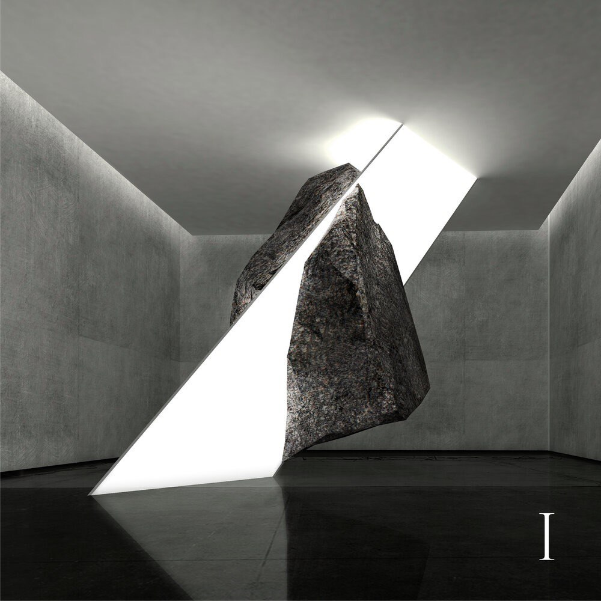
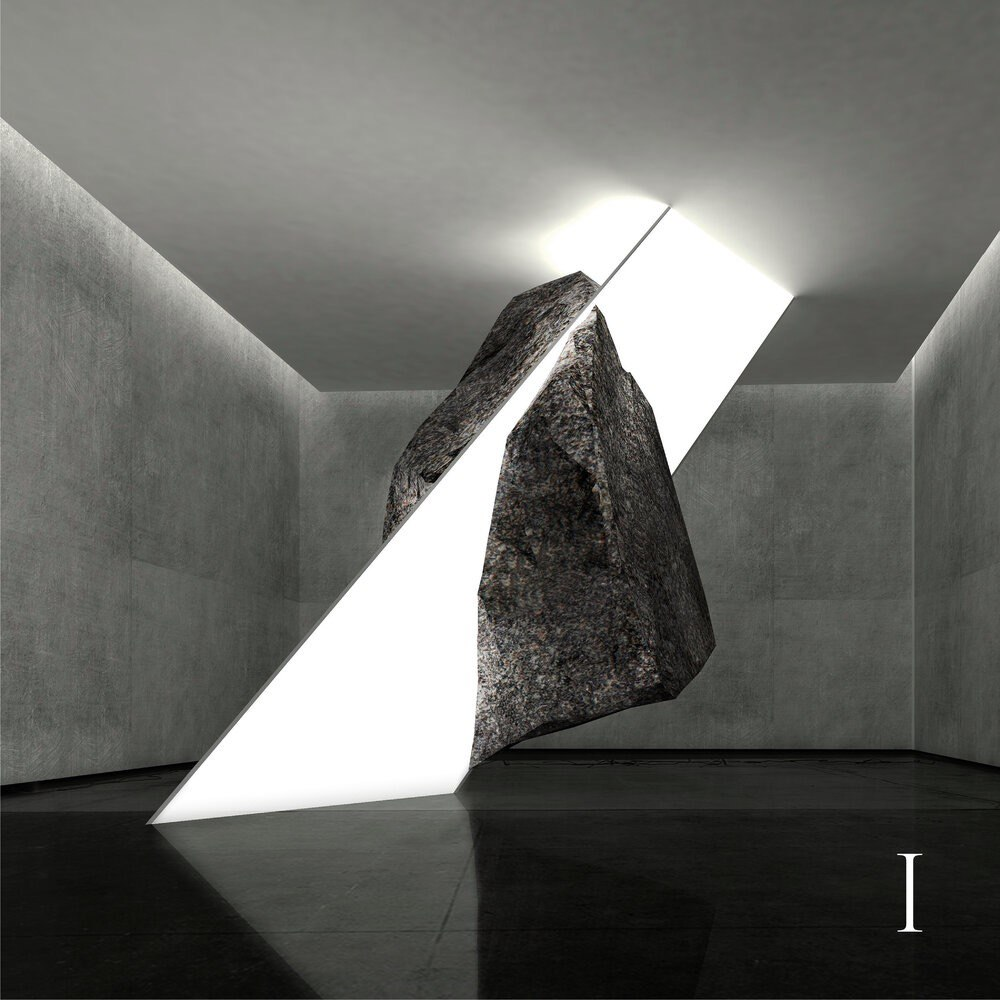

Son Lux
"Live Another Life"
“Live Another Life” deals with the tension of control and how identities can be bound together in relationships. A simmering percussive loop sets the stage for Lott's threadbare entrance: "I'm done asking you to be healed for me, I'm done asking you to heel to me." As the music approaches a boil, bursts of a smeared, hashy choir undergird Lott’s lyrics as an abrupt flurry of drums snaps the song into an urgent tumble.
"Live Another Life (Heal For Me)” trades the tactile percussive sounds of the original version for an unstable swirling haze of guitar-generated textures, grounded by heavy, mangled 808 kicks and gut-punch snares.
Nappy Nina deftly delivers angular cadences on her two verses, diving deep into the nuances of a fraying relationship, reflecting: "we forage and make believe, force a forest with made up leaves."
released October 14, 2020

 
